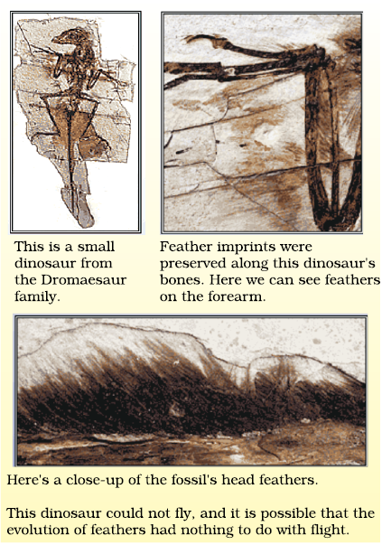
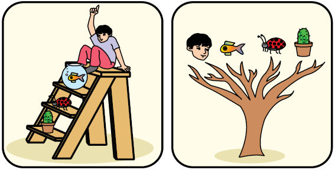

CHAPTER 9
Heredity and Evolution
We have seen that reproductive processes give rise to new individuals that are similar, but subtly different. We have discussed how some amount of variation is produced even during asexual reproduction. And the number of successful variations are maximised by the process of sexual reproduction. If we observe a field of sugarcane we find very little variations among the individual plants. But in a number of animals including human beings, which reproduce sexually, quite distinct variations are visible among different individuals. In this chapter, we shall be studying the mechanism by which variations are created and inherited. The long-term consequences of the accumulation of variations are also an interesting point to be considered. We shall be studying this under evolution.
9.1 ACCUMULATION OF VARIATION DURING REPRODUCTION
Inheritance from the previous generation provides both a common basic body design, and subtle changes in it, for the next generation. Now think about what would happen when this new generation, in its turn, reproduces. The second generation will have differences that they inherit from the first generation, as well as newly created differences (Fig. 9.1).

Figure 9.1
Creation of diversity over succeeding generations. The original organism at the top will give rise to, say, two individuals, similar in body design, but with subtle differences. Each of them, in turn, will give rise to two individuals in the next generation. Each of the four individuals in the bottom row will be different from each other. While some of these differences will be unique, others will be inherited from their respective parents, who were different from each other.
Figure 9.1 would represent the situation if a single individual reproduces, as happens in asexual reproduction. If one bacterium divides, and then the resultant two bacteria divide again, the four individual bacteria generated would be very similar. There would be only very minor differences between them, generated due to small inaccuracies in DNA copying. However, if sexual reproduction is involved, even greater diversity will be generated, as we will see when we discuss the rules of inheritance.
Do all these variations in a species have equal chances of surviving in the environment in which they find themselves? Obviously not. Depending on the nature of variations, different individuals would have different kinds of advantages. Bacteria that can withstand heat will survive better in a heat wave, as we have discussed earlier. Selection of variants by environmental factors forms the basis for evolutionary processes, as we will discuss in later sections.
QUESTIONS
1. If a trait A exists in 10% of a population of an asexually reproducing species and a trait B exists in 60% of the same population, which trait is likely to have arisen earlier?
2. How does the creation of variations in a species promote survival?
9.2 HEREDITY
The most obvious outcome of the reproductive process still remains the generation of individuals of similar design. The rules of heredity determine the process by which traits and characteristics are reliably inherited. Let us take a closer look at these rules.
9.2.1 Inherited Traits
What exactly do we mean by similarities and differences? We know that a child bears all the basic features of a human being. However, it does not look exactly like its parents, and human populations show a great deal of variation.
Activity 9.1
- Observe the ears of all the students in the class. Prepare a list of students having free or attached earlobes and calculate the percentage of students having each (Fig. 9.2). Find out about the earlobes of the parents of each student in the class. Correlate the earlobe type of each student with that of their parents. Based on this evidence, suggest a possible rule for the inheritance of earlobe types.
(a)
Figure 9.2 (a) Free and (b) attached earlobes. The lowest part of the ear, called the earlobe, is closely attached to the side of the head in some of us, and not in others. Free and attached earlobes are two variants found in human populations.
9.2.2 Rules for the Inheritance of Traits –Mendel’s Contributions
The rules for inheritance of such traits in human beings are related to the fact that both the father and the mother contribute practically equal amounts of genetic material to the child. This means that each trait can be influenced by both paternal and maternal DNA. Thus, for each trait there will be two versions in each child. What will, then, the trait seen in the child be? Mendel (see box) worked out the main rules of such inheritance, and it is interesting to look at some of his experiments from more than a century ago.
Gregor Johann Mendel (1822–1884)
Mendel was educated in a monastery and went on to study science and mathematics at the University of Vienna. Failure in the examinations for a teaching certificate did not suppress his zeal for scientific quest. He went back to his monastery and started growing peas. Many others had studied the inheritance of traits in peas and other organisms earlier, but Mendel blended his knowledge of science and mathematics and was the first one to keep count of individuals exhibiting a particular trait in each generation. This helped him to arrive at the laws of inheritance.
Mendel used a number of contrasting visible characters of garden peas – round/wrinkled seeds, tall/short plants, white/violet flowers and so on. He took pea plants with different characteristics – a tall plant and a short plant, produced progeny from them, and calculated the percentages of tall or short progeny.
In the first place, there were no halfway characteristics in this first-generation, or F1 progeny – no ‘medium-height’ plants. All plants were tall. This meant that only one of the parental traits was seen, not some mixture of the two. So the next question was, were the tall plants in the F1 generation exactly the same as the tall plants of the parent generation? Mendelian experiments test this by getting both the parental plants and these F1 tall plants to reproduce by self-pollination. The progeny of the parental plants are, of course, all tall. However, the second-generation, or F2, progeny of the F1 tall plants are not all tall. Instead, one quarter of them are short. This indicates that both the tallness and shortness traits were inherited in the F1 plants, but only the tallness trait was expressed. Thus, two copies of the trait are inherited in each sexually reproducing organism. These two may be identical, or may be different, depending on the parentage. A pattern of inheritance can be worked out with this assumption, as shown in Fig. 9.3.

Figure 9.3 Inheritance of traits over two generations
Activity 9.2
- In Fig. 9.3, what experiment would we do to confirm that the F2 generation did in fact have a 1:2:1 ratio of TT, Tt and tt trait combinations?
In this explanation, both TT and Tt are tall plants, while only tt is a short plant. In other words, a single copy of ‘T’ is enough to make the plant tall, while both copies have to be ‘t’ for the plant to be short. Traits like ‘T’ are called dominant traits, while those that behave like ‘t’ are called recessive traits. Work out which trait would be considered dominant and which one recessive in Fig. 9.4.
Figure 9.4
What happens when pea plants showing two different characteristics, rather than just one, are bred with each other? What do the progeny of a tall plant with round seeds and a short plant with wrinkled-seeds look like? They are all tall and have round seeds. Tallness and round seeds are thus dominant traits. But what happens when these F1 progeny are used to generate F2 progeny by self-pollination? A Mendelian experiment will find that some F2 progeny are tall plants with round seeds, and some were short plants with wrinkled seeds. However, there would also be some F2 progeny that showed new combinations. Some of them would be tall, but have wrinkled seeds, while others would be short, but have round seeds. You can see as to how new combinations of traits are formed in F2 offspring when factors controlling for seed shape and seed colour recombine to form zygote leading to form F2 offspring (Fig. 9.5). Thus, the tall/short trait and the round seed/wrinkled seed trait are independently inherited.
9.2.3 How do these Traits get Expressed?
How does the mechanism of heredity work? Cellular DNA is the information source for making proteins in the cell. A section of DNA that provides information for one protein is called the gene for that protein. How do proteins control the characteristics that we are discussing here? Let us take the example of tallness as a characteristic. We know that plants have hormones that can trigger growth. Plant height can thus depend on the amount of a particular plant hormone. The amount of the plant hormone made will depend on the efficiency of the process for making it. Consider now an enzyme that is important for this process. If this enzyme works efficiently, a lot of hormone will be made, and the plant will be tall. If the gene for that enzyme has an alteration that makes the enzyme less efficient, the amount of hormone will be less, and the plant will be short. Thus, genes control characteristics, or traits.
If the interpretations of Mendelian experiments we have been discussing are correct, then both parents must be contributing equally to the DNA of the progeny during sexual reproduction. We have disscussed this issue in the previous Chapter. If both parents can help determine the trait in the progeny, both parents must be contributing a copy of the same gene. This means that each pea plant must have two sets of all genes, one inherited from each parent. For this mechanism to work, each germ cell must have only one gene set.
How do germ-cells make a single set of genes from the normal two copies that all other cells in the body have? If progeny plants inherited a single whole gene set from each parent, then the experiment in Fig. 9.5 cannot work. This is because the two characteristics ‘R’ and ‘y’ would then be linked to each other and cannot be independently inherited. This is explained by the fact that each gene set is present, not as a single long thread of DNA, but as separate independent pieces, each called a chromosome. Thus, each cell will have two copies of each chromosome, one each from the male and female parents. Every germ-cell will take one chromosome from each pair and these may be of either maternal or paternal origin. When two germ cells combine, they will restore the normal number of chromosomes in the progeny, ensuring the stability of the DNA of the species. Such a mechanism of inheritance explains the results of the Mendel experiments, and is used by all sexually reproducing organisms. But asexually reproducing organisms also follow similar rules of inheritance. Can we work out how their inheritance might work?

Figure 9.5 Independent inheritance
of two separate traits,
shape and colour of seeds
9.2.4 Sex Determination
We have discussed the idea that the two sexes participating in sexual reproduction must be somewhat different from each other for a number of reasons. How is the sex of a newborn individual determined? Different species use very different strategies for this. Some rely entirely on environmental cues. Thus, in some animals, the temperature at which fertilised eggs are kept determines whether the animals developing in the eggs will be male or female. In other animals, such as snails, individuals can change sex, indicating that sex is not genetically determined. However, in human beings, the sex of the individual is largely genetically determined. In other words, the genes inherited from our parents decide whether we will be boys or girls. But so far, we have assumed that similar gene sets are inherited from both parents. If that is the case, how can genetic inheritance determine sex?
Figure 9.6 Sex determination in human beings
The explanation lies in the fact that all human chromosomes are not paired. Most human chromosomes have a maternal and a paternal copy, and we have 22 such pairs. But one pair, called the sex chromosomes, is odd in not always being a perfect pair. Women have a perfect pair of sex chromosomes, both called X. But men have a mismatched pair in which one is a normal-sized X while the other is a short one called Y. So women are XX, while men are XY. Now, can we work out what the inheritance pattern of X and Y will be?
As Fig. 9.6 shows, half the children will be boys and half will be girls. All children will inherit an X chromosome from their mother regardless of whether they are boys or girls. Thus, the sex of the children will be determined by what they inherit from their father. A child who inherits an X chromosome from her father will be a girl, and one who inherits a Y chromosome from him will be a boy.
Questions
1. How do Mendel’s experiments show that traits may be dominant or recessive?
2. How do Mendel’s experiments show that traits are inherited independently?
3. A man with blood group A marries a woman with blood group O and their daughter has blood group O. Is this information enough to tell you which of the traits – blood group A or O – is dominant? Why or why not?
4. How is the sex of the child determined in human beings?
9.3 Evolution
We have noted that there is an inbuilt tendency to variation during reproduction, both because of errors in DNA copying, and as a result of sexual reproduction. Let us now look at some consequences of this tendency.
9.3.1 An Illustration
Consider a group of twelve red beetles. They live, let us assume, in some bushes with green leaves. Their population will grow by sexual reproduction, and therefore, can generate variations. Let us imagine also that crows eat these beetles. The more beetles the crows eat, the fewer beetles are available to reproduce. Now, let us think about some different situations (Fig. 9.7) that can develop in this beetle population.
Figure 9.7 Variations in a population – inherited and otherwise
In the first situation, a colour variation arises during reproduction, so that there is one beetle that is green in colour instead of red. This beetle, moreover, can pass the colour on to its progeny, so that all its progeny beetles are green. Crows cannot see green-coloured beetles on the green leaves of the bushes, and therefore cannot eat them. What happens then? The progeny of green beetles is not eaten, while the progeny of red beetles continues to be eaten. As a result, there are more and more green beetles than red ones in the beetle population.
In a second situation, again, a colour variation arises during reproduction, but now it results in a beetle that is blue in colour instead of red. This beetle can also pass the colour on to its progeny, so that all its progeny beetles are blue. Crows can see blue-coloured beetles in the green leaves of the bushes as well as they can see red ones, and therefore can eat them. What happens initially? In the population, as it expands, there are a few blue beetles, but most are red. But at this point, an elephant comes by, and stamps on the bushes where the beetles live. This kills most of the beetles. By chance, the few beetles that have survived are mostly blue. The beetle population slowly expands again, but now, the beetles in the population are mostly blue.
It is obvious that in both situations, what started out as a rare variation came to be a common characteristic in the population. In other words, the frequency of an inherited trait changed over generations. Since genes control traits, we can say that the frequency of certain genes in a population changed over generations. This is the essence of the idea of evolution.
But there are interesting differences, too, in the two situations. In the first case, the variation became common because it gave a survival advantage. In other words, it was naturally selected. We can see that the natural selection is exerted by the crows. The more crows there are, the more red beetles would be eaten, and the more the proportion of green beetles in the population would be. Thus, natural selection is directing evolution in the beetle population. It results in adaptations in the beetle population to fit their environment better.
In the second situation, the colour change gave no survival advantage. Instead, it was simply a matter of accidental survival of beetles of one colour that changed the common characteristic of the resultant population. The elephant would not have caused such major havoc in the beetle population if the beetle population had been very large. So, accidents in small populations can change the frequency of some genes in a population, even if they give no survival advantage. This is the notion of genetic drift, which provides diversity without any adaptations.
Now consider a third situation. In this, as the beetle population begins to expand, the bushes start suffering from a plant disease. The amount of leaf material for the beetles is reduced. The beetles are poorly nourished as a result. The average weight of adult beetles decreases from what it used to be when leaves were plentiful, but there is no genetic change occurring. After a few years and a few beetle generations of such scarcity, the plant disease is eliminated. There is a lot of leaf food. At this time, what would we expect the weight of the beetles to be?
9.3.2 Acquired and Inherited Traits
We discussed the idea that the germ cells of sexually reproducing populations are made in specialised reproductive tissue. If the weight of the beetle is reduced because of starvation, that will not change the DNA of the germ cells. Therefore, low weight is not a trait that can be inherited by the progeny of a starving beetle. Therefore, even if some generations of beetles are low in weight because of starvation, that is not an example of evolution, since the change is not inherited over generations. Change in non-reproductive tissues cannot be passed on to the DNA of the germ cells. Therefore the experiences of an individual during its lifetime cannot be passed on to its progeny, and cannot direct evolution.
Consider another example of how an individual cannot pass on to its progeny the experiences of its lifetime. If we breed a group of mice, all their progeny will have tails, as expected. Now, if the tails of these mice are removed by surgery in each generation, do these tailless mice have tailless progeny? The answer is no, and it makes sense because removal of the tail cannot change the genes of the germ cells of the mice.
Charles Robert Darwin (1809–1882)
Charles Darwin set out on a voyage when he was 22 years old. The five-year voyage took him to South America and the islands off its coast. The studies that he conducted during this voyage were to change forever the way we look at the variety of life on earth. Interestingly, after he got back to England, he never left its shores again. He stayed at home and conducted various experiments that led him to formulate his hypothesis that evolution took place due to natural selection. He did not know the mechanism whereby variations arose in the species. He would have been enlightened by Mendel’s experiments, but these two gentlemen did not know of each other or their work!
We often associate Darwin solely with the theory of evolution. But he was an accomplished naturalist, and one of the studies he conducted was to do with the role of earthworms in soil fertility.
This is the reason why the ideas of heredity and genetics that we have discussed earlier are so essential for understanding evolution. Even Charles Darwin, who came up with the idea of evolution of species by natural selection in the nineteenth century, could not work out the mechanism. It is ironic that he could have done so if he had seen the significance of the experiments his Austrian contemporary, Gregor Mendel, was doing. But then, Mendel too did not notice Darwin’s work as relevant to his!
DO YOU KNOW?
Origin of life on earth
Darwin’s theory of evolution tells us how life evolved from simple to more complex forms and Mendel’s experiments give us the mechanism for the inheritance of traits from one generation to the next. But neither tells us anything about how life began on earth in the first place.
J.B.S. Haldane, a British scientist (who became a citizen of India later), suggested in 1929 that life must have developed from the simple inorganic molecules which were present on earth soon after it was formed. He speculated that the conditions on earth at that time, which were far from the conditions we see today, could have given rise to more complex organic molecules that were necessary for life. The first primitive organisms would arise from further chemical synthesis.
How did these organic molecules arise? An answer was suggested by the experiment conducted by Stanley L. Miller and Harold C. Urey in 1953. They assembled an atmosphere similar to that thought to exist on early earth (this had molecules like ammonia, methane and hydrogen sulphide, but no oxygen) over water. This was maintained at a temperature just below 100°C and sparks were passed through the mixture of gases to simulate lightning. At the end of a week, 15% of the carbon (from methane) had been converted to simple compounds of carbon including amino acids which make up protein molecules. So, can life arise afresh on earth even now?
QUESTIONS
1. What are the different ways in which individuals with a particular trait may increase in a population?
2. Why are traits acquired during the life-time of an individual not inherited?
3. Why are the small numbers of surviving tigers a cause of worry from the point of view of genetics?
9.4 SPECIATION
What we have seen so far is micro-evolution. That means that the changes are small, even though they are significant. Also, they simply change the common characteristics of a particular species. But this does not properly explain how new species come into existence. That can be said to have happened only if this group of beetles we are thinking about, splits into two populations that cannot reproduce with each other. When this happens, they can be called two independent species. So, can we extend the reasoning we have used above to explain such speciation?
Consider what would happen if the bushes the beetles feed on are spread widely over a mountain range. The beetle population becomes very large as a result. But individual beetles feed mostly on a few nearby bushes throughout their lifetime. They do not travel far. So, in this huge population of beetles, there will be sub-populations in neighbourhoods. Since male and female beetles have to meet for reproduction to happen, most reproduction will be within these sub-populations. Of course, an occasional adventurous beetle might go from one site to another. Or a beetle is picked up by a crow from one site and dropped in the other site without being eaten. In either case, the migrant beetle will reproduce with the local population. This will result in the genes of the migrant beetle entering a new population. This kind of gene flow is bound to happen between populations that are partly, but not completely separated. If, however, between two such sub-populations a large river comes into existence, the two populations will be further isolated. The levels of gene flow between them will decrease even further.
Over generations, genetic drift will accumulate different changes in each sub-population. Also, natural selection may also operate differently in these different geographic locations. Thus, for example, in the territory of one sub-population, crows are eliminated by eagles. But this does not happen for the other sub-population, where crow numbers are very high. As a result, the green variation will not be selected at the first site, while it will be strongly selected at the second.
Together, the processes of genetic drift and natural selection will result in these two isolated sub-populations of beetles becoming more and more different from each other. Eventually, members of these two groups will be incapable of reproducing with each other even if they happen to meet.
There can be a number of ways by which this can happen. If the DNA changes are severe enough, such as a change in the number of chromosomes, eventually the germ cells of the two groups cannot fuse with each other. Or a new variation emerges in which green females will not mate with red males, but only with green males. This allows very strong natural selection for greenness. Now, if such a green female beetle meets a red male from the other group, her behaviour will ensure that there is no reproduction between them. Effectively, new species of beetles are being generated.
Questions
1. What factors could lead to the rise of a new species?
2. Will geographical isolation be a major factor in the speciation of a self-pollinating plant species? Why or why not?
3. Will geographical isolation be a major factor in the speciation of an organism that reproduces asexually? Why or why not?
9.5 EVOLUTION AND CLASSIFICATION
Based on these principles, we can work out the evolutionary relationships of the species we see around us. It is a sort of going backwards in time. We can do this by identifying hierarchies of characteristics between species. In order to understand this process, let us think back to our discussion on the classification of organisms in Class IX.
Similarities among organisms will allow us to group them and then study the groups. For this, which characteristics decide more fundamental differences among organisms, and which ones decide less basic differences? What is meant by ‘characteristics’, anyway? Characteristics are details of appearance or behaviour; in other words, a particular form or a particular function. That we have four limbs is thus a characteristic. That plants can do photosynthesis is also a characteristic.
Some basic characteristics will be shared by most organisms. The cell is the basic unit of life in all organisms. The characteristics in the next level of classification would be shared by most, but not all organisms. A basic characteristic of cell design that differs among different organisms is whether the cell has a nucleus. Bacterial cells do not, while the cells of most other organisms do. Among organisms with nucleated cells, which ones are unicellular and which ones multi-cellular? That property marks a very basic difference in body design, because of specialisation of cell types and tissues. Among multi-cellular organisms, whether they can undertake photosynthesis or not will provide the next level of classification. Among the multi-cellular organisms that cannot do photosynthesis, whether the skeleton is inside the body or around the body will mark another fundamental design difference. We can see that, even in these few questions that we have asked, a hierarchy is developing that allows us to make classification groups.
The more characteristics two species will have in common, the more closely they are related. And the more closely they are related, the more recently they will have had a common ancestor. An example will help. A brother and a sister are closely related. They have common ancestors in the first generation before them, namely, their parents. A girl and her first cousin are also related, but less than the girl and her brother. This is because cousins have common ancestors, their grandparents, in the second generation before them, not in the first one. We can now appreciate that classification of species is in fact a reflection of their evolutionary relationship.
We can thus build up small groups of species with recent common ancestors, then super-groups of these groups with more distant common ancestors, and so on. In theory, we can keep going backwards like this until we come to the notion of a single species at the very beginning of evolutionary time. If that is the case, then at some point in the history of the earth, non-living material must have given rise to life. There are many theories about how this might have happened. It would be interesting to come up with theories of our own!
9.5.1 Tracing Evolutionary Relationships
When we try to follow evolutionary relationships, how do we identify characteristics as common? These characteristics in different organisms would be similar because they are inherited from a common ancestor. As an example, consider the fact that mammals have four limbs, as do birds, reptiles and amphibians (Fig. 9.8). The basic structure of the limbs is similar though it has been modified to perform different functions in various vertebrates. Such a homologous characteristic helps to identify an evolutionary relationship between apparently different species.
Figure 9.8 Homologous organs
However, all similarities simply in organ shape are not necessarily because of common ancestry. What would we think about the wings of birds and bats, for example (Fig. 9.9)? Birds and bats have wings, but squirrels and lizards do not. So are birds and bats more closely related to each other than to squirrels or lizards?

Figure 9.9 Analogous organs – The wing of a bat and the wing of a bird
Before we jump to this conclusion, let us look at the wings of birds and bats more closely. When we do that, we find that the wings of bats are skin folds stretched mainly between elongated fingers. But the wings of birds are a feathery covering all along the arm. The designs of the two wings, their structure and components, are thus very different. They look similar because they have a common use for flying, but their origins are not common. This makes them analogous characteristics, rather than homologous characteristics. It would now be interesting to think about whether bird arms and bat arms should be considered homologous or analogous!
9.5.2 Fossils
Such studies of organ structure can be done not only on current species, but also on species that are no longer alive. How do we know that these extinct species ever existed? We know this from finding fossils (Fig. 9.10). What are fossils? Usually, when organisms die, their bodies will decompose and be lost. But every once in a while, the body or at least some parts may be in an environment that does not let it decompose completely. If a dead insect gets caught in hot mud, for example, it will not decompose quickly, and the mud will eventually harden and retain the impression of the body parts of the insect. All such preserved traces of living organisms are called fossils.
Figure 9.10 Various kind of fossils. Note the different appearances and degrees of detail and preservation. The dinosaur skull fossil shown was found only a few years ago in the Narmada valley.
How do we know how old the fossils are? There are two components to this estimation. One is relative. If we dig into the earth and start finding fossils, it is reasonable to suppose that the fossils we find closer to the surface are more recent than the fossils we find in deeper layers. The second way of dating fossils is by detecting the ratios of different isotopes of the same element in the fossil material. It would be interesting to find out exactly how this method works!
DO YOU KNOW?
How do fossils form layer by layer?
Let us start 100 million years ago. Some invertebrates on the sea-bed die, and are buried in the sand. More sand accumulates, and sandstone forms under pressure.
Millions of years later, dinosaurs living in the area die, and their bodies, too, are buried in mud. This mud is also compressed into rock, above the rock containing the earlier invertebrate fossils.
Again millions of years later, the bodies of horse-like creatures dying in the area are fossilised in rocks above these earlier rocks.
Much later, by erosion or water flow wears away some of the rock and exposes the horse-like fossils. As we dig deeper, we will find older and older fossils.
9.5.3 Evolution by Stages
A question that arises here is – if complicated organs, such as the eye, are selected for the advantage they provide, how can they be generated by a single DNA change? Surely such complex organs will be created bit-by-bit over generations? But how can each intermediate change be selected for? There are a number of possible explanations. Even an intermediate stage (Fig. 9.11), such as a rudimentary eye, can be useful to some extent. This might be enough to give a fitness advantage. In fact, the eye – like the wing – seems to be a very popular adaptation. Insects have them, so does an octopus, and so do vertebrates. And the structure of the eye in each of these organisms is different – enough for them to have separate evolutionary origins.
Figure 9.11 A flatworm named Planaria has very simple ‘eyes’ that are really just eye-spots which detect light.
Also, a change that is useful for one property to start with can become useful later for quite a different function. Feathers, for example, can start out as providing insulation in cold weather (Fig. 9.12). But later, they might become useful for flight. In fact, some dinosaurs had feathers, although they could not fly using the feathers. Birds seem to have later adapted the feathers to flight. This, of course, means that birds are very closely related to reptiles, since dinosaurs were reptiles!

Figure 9.12 Dinosaurs and the evolution of feathers
It is all very well to say that very dissimilar-looking structures evolve from a common ancestral design. It is true that analysis of the organ structure in fossils allows us to make estimates of how far back evolutionary relationships go. But those are guesses about what happened in history. Are there any current examples of such a process? The wild cabbage plant is a good example. Humans have, over more than two thousand years, cultivated wild cabbage as a food plant, and generated different vegetables from it by selection (see Fig. 9.13). This is, of course, artificial selection rather than natural selection. So some farmers have wanted to select for very short distances between leaves, and have bred the cabbage we eat. Some have wanted to select for arrested flower development, and have bred broccoli, or for sterile flowers, and have made the cauliflower. Some have selected for swollen parts, and come up with kohlrabi. Some have simply looked for slightly larger leaves, and come up with a leafy vegetable called kale. Would we have thought that all these structures are descended from the same ancestor if we had not done it ourselves?
Figure 9.13 Evolution of wild cabbage!
Another way of tracing evolutionary relationships depends on the original idea that we started with. That idea was that changes in DNA during reproduction are the basic events in evolution. If that is the case, then comparing the DNA of different species should give us a direct estimate of how much the DNA has changed during the formation of these species. This method is now extensively used to define evolutionary relationships.
MORE TO KNOW!
Molecular phylogeny
We have been discussing how changes in the DNA during cell division would lead to changes in the proteins that are made from this new DNA. Another point that has been made is that these changes would accumulate from one generation to the next. Could this be used to trace the changes in DNA backwards in time and find out where each change diverged from the other? Molecular phylogeny does exactly this. This approach is based on the idea that organisms which are more distantly related will accumulate a greater number of differences in their DNA. Such studies trace the evolutionary relationships and it has been highly gratifying to find that the relationships among different organisms shown by molecular phylogeny match the classification scheme that we learnt in Class IX.
QUESTIONS
1. Give an example of characteristics being used to determine how close two species are in evolutionary terms.
2. Can the wing of a butterfly and the wing of a bat be considered homologous organs? Why or why not?
3. What are fossils? What do they tell us about the process of evolution?
9.6 EVOLUTION SHOULD NOT BE EQUATED WITH ‘PROGRESS’
In an exercise of tracing the family trees of species, we need to remember certain things. Firstly, there are multiple branches possible at each and every stage of this process. So it is not as if one species is eliminated to give rise to a new one. A new species has emerged. But that does not necessarily mean, like the beetle example we have been thinking about, that the old species will disappear. It will all depend on the environment. Also, it is not as if the newly generated species are in any way ‘better’ than the older one. It is just that natural selection and genetic drift have together led to the formation of a population that cannot reproduce with the original one. So, for example, it is not true that human beings have evolved from chimpanzees. Rather, both human beings and chimpanzees have a common ancestor a long time ago. That common ancestor is likely to have been neither human or chimpanzee. Also, the first step of separation from that ancestor is unlikely to have resulted in modern chimpanzees and human beings. Instead, the two resultant species have probably evolved in their own separate ways to give rise to the current forms
In fact, there is no real ‘progress’ in the idea of evolution. Evolution is simply the generation of diversity and the shaping of the diversity by environmental selection. The only progressive trend in evolution seems to be that more and more complex body designs have emerged over time. However, again, it is not as if the older designs are inefficient! So many of the older and simpler designs still survive. In fact, one of the simplest life forms – bacteria – inhabit the most inhospitable habitats like hot springs, deep-sea thermal vents and the ice in Antarctica. In other words, human beings are not the pinnacle of evolution, but simply yet another species in the teeming spectrum of evolving life.
9.6.1 Human Evolution
The same tools for tracing evolutionary relationships – excavating, time-dating and studying fossils, as well as determining DNA sequences – have been used for studying human evolution. There is a great diversity of human forms and features across the planet. So much so that, for a long time, people used to talk about human ‘races’. Skin colour used to be the commonest way of identifying these so-called races. Some were called yellow, some black, white or brown. A major question debated for a long time was, have these apparent groups evolved differently? Over recent years, the evidence has become very clear. The answer is that there is no biological basis to the notion of human races. All humans are a single species.

Figure 9.14 Evolution —Ladder versus Tree
Not only that, regardless of where we have lived for the past few thousand years, we all come from Africa. The earliest members of the human species, Homo sapiens, can be traced there. Our genetic footprints can be traced back to our African roots. A couple of hundred thousand years ago, some of our ancestors left Africa while others stayed on. While the residents spread across Africa, the migrants slowly spread across the planet – from Africa to West Asia, then to Central Asia, Eurasia, South Asia, East Asia. They travelled down the islands of Indonesia and the Philippines to Australia, and they crossed the Bering land bridge to the Americas. They did not go in a single line, so they were not travelling for the sake of travelling, obviously. They went forwards and backwards, with groups sometimes separating from each other, sometimes coming back to mix with each other, even moving in and out of Africa. Like all other species on the planet, they had come into being as an accident of evolution, and were trying to live their lives the best they could.
Questions
1. Why are human beings who look so different from each other in terms of size, colour and looks said to belong to the same species?
2. In evolutionary terms, can we say which among bacteria, spiders, fish and chimpanzees have a ‘better’ body design? Why or why not?
What you have learnt
- Variations arising during the process of reproduction can be inherited.
- These variations may lead to increased survival of the individuals.
- Sexually reproducing individuals have two copies of genes for the same trait. If the copies are not identical, the trait that gets expressed is called the dominant trait and the other is called the recessive trait.
- Traits in one individual may be inherited separately, giving rise to new combinations of traits in the offspring of sexual reproduction.
- Sex is determined by different factors in various species. In human beings, the sex of the child depends on whether the paternal chromosome is X (for girls) or Y (for boys).
- Variations in the species may confer survival advantages or merely contribute to the genetic drift.
- Changes in the non-reproductive tissues caused by environmental factors are not inheritable.
- Speciation may take place when variation is combined with geographical isolation.
- Evolutionary relationships are traced in the classification of organisms.
- Tracing common ancestors back in time leads us to the idea that at some point of time, non-living material must have given rise to life.
- Evolution can be worked out by the study of not just living species, but also fossils.
- Complex organs may have evolved because of the survival advantage of even the intermediate stages.
- Organs or features may be adapted to new functions during the course of evolution. For example, feathers are thought to have been initially evolved for warmth and later adapted for flight.
- Evolution cannot be said to ‘progress’ from ‘lower’ forms to ‘higher’ forms. Rather, evolution seems to have given rise to more complex body designs even while the simpler body designs continue to flourish.
- Study of the evolution of human beings indicates that all of us belong to a single species that evolved in Africa and spread across the world in stages.
Exercises
1. A Mendelian experiment consisted of breeding tall pea plants bearing violet flowers with short pea plants bearing white flowers. The progeny all bore violet flowers, but almost half of them were short. This suggests that the genetic make-up of the tall parent can be depicted as
(a) TTWW
(b) TTww
(c) TtWW
(d) TtWw
2. An example of homologous organs is
(a) our arm and a dog’s fore-leg.
(b) our teeth and an elephant’s tusks.
(c) potato and runners of grass.
(d) all of the above.
3. In evolutionary terms, we have more in common with
(a) a Chinese school-boy.
(b) a chimpanzee.
(c) a spider.
(d) a bacterium.
4. A study found that children with light-coloured eyes are likely to have parents with light-coloured eyes. On this basis, can we say anything about whether the light eye colour trait is dominant or recessive? Why or why not?
5. How are the areas of study – evolution and classification – interlinked?
6. Explain the terms analogous and homologous organs with examples.
7. Outline a project which aims to find the dominant coat colour in dogs.
8. Explain the importance of fossils in deciding evolutionary relationships.
9. What evidence do we have for the origin of life from inanimate matter?
10. Explain how sexual reproduction gives rise to more viable variations than asexual reproduction. How does this affect the evolution of those organisms that reproduce sexually?
11. How is the equal genetic contribution of male and female parents ensured in the progeny?
12. Only variations that confer an advantage to an individual organism will survive in a population. Do you agree with this statement? Why or why not?